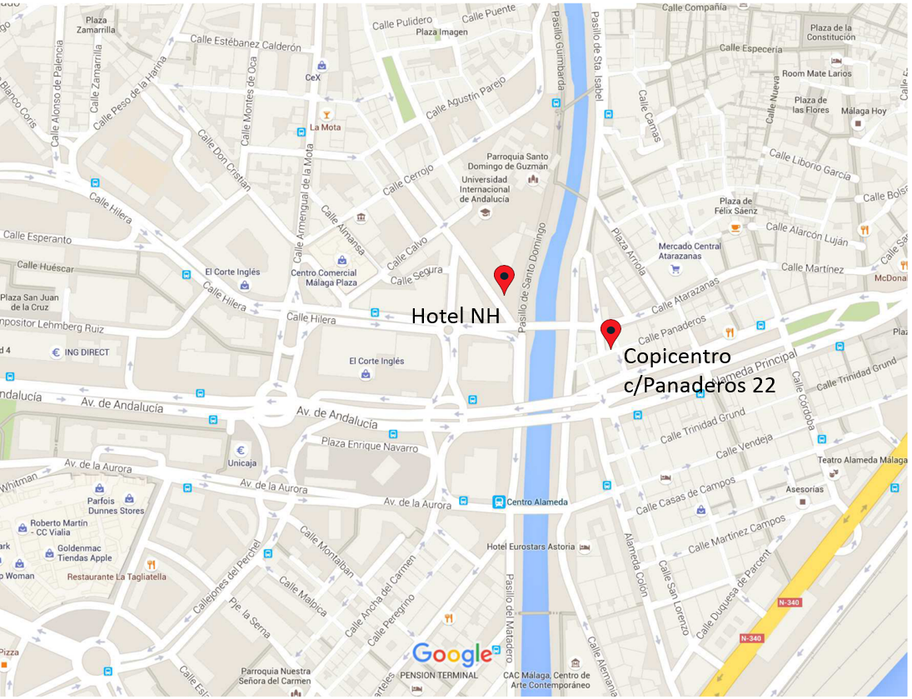

Information for Presenters
There will be two types of presentation: oral and poster presentations as in previous ISMIR editions.
Oral Presentations of Papers
Each paper has an allocation of 20 minutes for presentation, including Q&As and changeover to the next speaker. We encourage authors to prepare a 15-minutes slideshow presentation and to leave 5 minutes for questions from the audience. A chair-person will conduct the session and no time extension will be granted.
The room will be equipped with a video projector (VGA & HDMI connectors) with a resolution of 1024x768. Audio can be connected through the HDMI or with an audio output (stereo minijack). A microphone for the presenters will be available. Presenters are asked to use their personal computers for presentations. (Nevertheless, make sure you also have a back-up pdf of your presentation.) A computer may be available for presenters, only if requested sufficiently in advance. No overhead projector will be available.
Make sure to include sound examples when possible and to prepare a lively presentation.
Presenters are asked to be present in the room, introduce themselves to their session chair and make sure that the presentation devices work properly at least 15 minutes before the start of their session.
Should you have any specific technical requirements (e.g. need of computer for showing slides), please, send an email to the conference organization before September 24th 2015. We cannot guarantee that your requirements can be fulfilled.
Postar Presentations of Papers
Each day, a different selection of posters will be hung in specific spaces at the venue for the whole day. On the specific day of display of their poster, presenters are expected to be near their poster at least during the 2 poster sessions of that day (i.e Tuesday 11:30-13:30 and 16:00-17:30; Wednesday and Thursday 10:00-11:30 and 16:00-17:30). Interaction around posters is also welcome during any time of that day.
The maximum dimensions of the poster should not exceed ISO A0 size: i.e., maximum height = 1189mm (46.81 inches) and maximum width = 841mm (33.11 inches). Posters can only be hung in Portrait format. Here you can download a poster template for ISMIR2015.
Each poster presenter will be assigned a particular stand.
Sound examples should only be played through headphones. Presenters are expected to bring their own headphones and playing device(s). Loudspeakers will not be allowed.
Electrical outlets will be available only at specific places in the room and on the side of only a few poster stands. Poster presenters planning on using laptop computers are therefore asked to inform the conference organization with sufficient advance, and are advised to fully charge their computer before their session.
Specific technical requirements should be asked to the conference organization (via mail) before September 30th 2015. We cannot guarantee that your requirements can be fulfilled.
There will be no poster craze (so it is not necessary to prepare a slide for this).
If you need to print your poster in Malaga, you can do it at Copicentro (c/Panaderos 22). It is very near the NH hotel.
